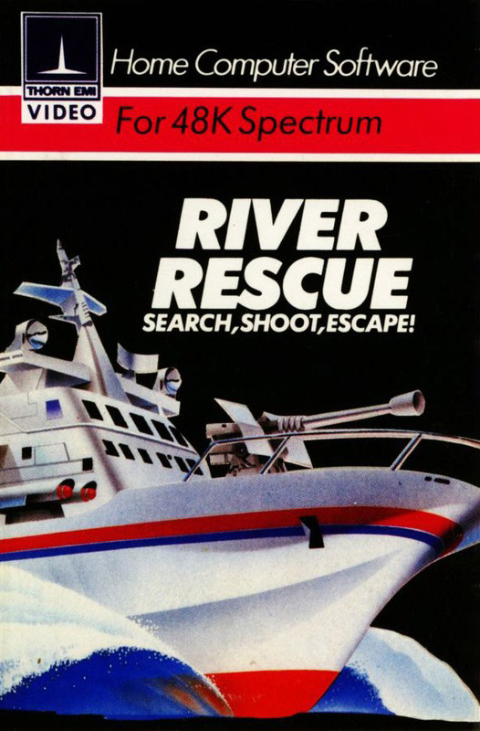
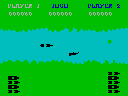

River Rescue


{kind=link}

| Publisher: | Thorn EMI |
| Price: | £6.95 |
| Year: | 1984 |
| Source: | CRASH, Issue 1 |
River Rescue might be described an an overhead scramble game. You are looking down on the river from above and, as in a scramble game, your boat moves along, or rather the banks scroll backwards. Accelerating takes the boat up to the right side of the screen in which position your reaction time has to be very good indeed. The obstacles in your path (river that is) are crocodiles, logs and small islands. These have to be dodged, although the boat is equipped with a gun. If you hit a croc it will disappear, but logs take a few shots and islands you can't damage at all.

The object of the game is to rescue a stranded party of explorers from the jungles of the northern (top) bank where they are threatened by natives, There are two jetties, one on each bank, opposite each other. Once you have picked up an explorer, you must navigate the river safely and then deposit him on the south bank jetty. You can pick up as many as six, but only one explorer per call, before letting them off on the south bank, for which exploit you receive bonus points. Shooting crocodiles also earns bonus points, and so does riding the river on the right hand side of the screen Every time you sink you lose any explorers on board.
If you are successful, another hazard appears. Your deadly rivals are trying to stop you and their planes will fly over, dropping mines in the water which must be shot away.
CRITICISM
'An engaging and addictive game. The response to the keys is so positive that it's easy to run into a bank. Stop ping at a jetty is a skilled task as well, Go too fast or misjudge by a milimeter and both boat and jetty go up! The animation of the crocodiles is simply and effectively done — they are the most realistic crocs I've yet seen. Very good.'
'Basically a simple idea and, as is usually the case, an addictive one to play. The graphics are quite attractive, especially the title page where the RIVER RESCUE is wiped away by a shoal (is that the right word?) of crocodiles, Very neat. Excel lent control response.'
'I liked the game very much and it works very well. It does get harder and harder as you go along, more crocodiles, more logs, bigger sandbanks and the damned rivals in their planes. Very addictive and quite original.'
COMMENTS
| Keyboard positions: | Very good, O/A up/down, O/P left/right and zero for fire and undock from a jetty |
| Joystick options: | Kempston, Sinclair |
| Keyboard play: | Very responsive |
| Use of colour: | Straight forward but effective |
| Graphics: | Smooth and well drawn |
| Sound: | Good |
| Skill levels: | Gets harder |
| Lives: | 6 |
| Games: | 1 or 2 player |
| General rating: | Very good, reasonably addictive |
| Use of computer: | 75% |
| Graphics: | 70% |
| Playability: | 80% |
| Getting started: | 70% |
| Addictive qualities: | 70% |
| Value for money: | 78% |
| Overall: | 74% |